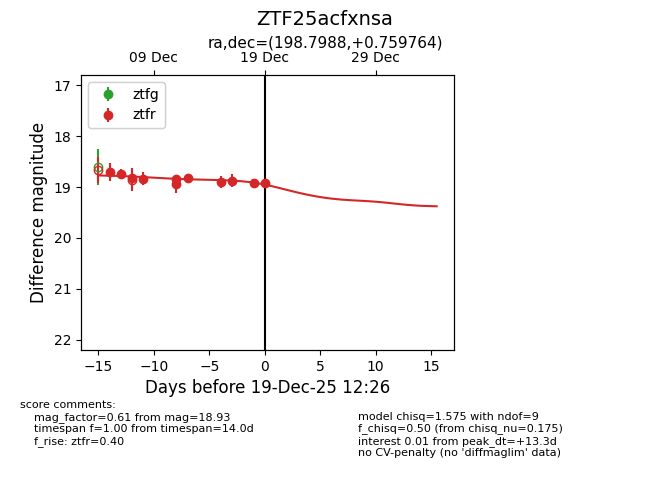
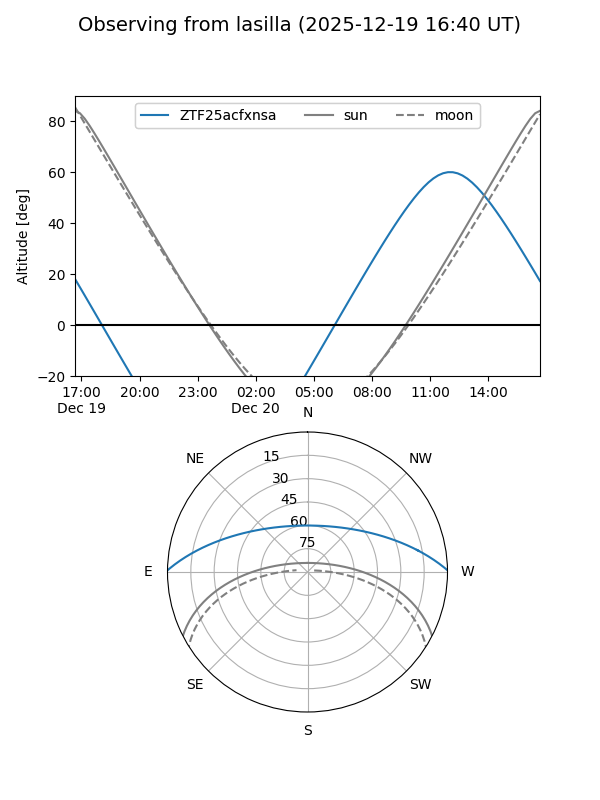
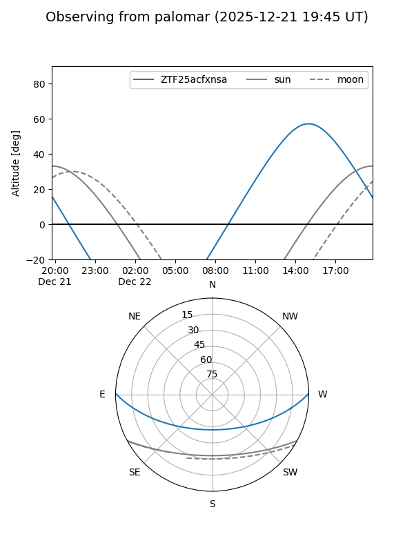
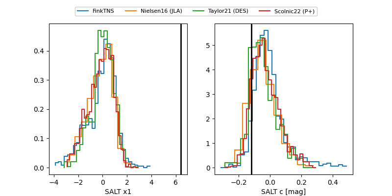

ZTF25acfxnsa
Target ZTF25acfxnsa at 2025-12-21 14:27
Aliases and brokers:
FINK: fink-portal.org/ZTF25acfxnsa
Lasair: lasair-ztf.lsst.ac.uk/objects/ZTF25acfxnsa
ALeRCE: alerce.online/object/ZTF25acfxnsa
alt names
ZTF25acfxnsa (ztf,fink_ztf)
Coordinates:
equatorial (ra, dec) = 198.7987,+0.75979
equatorial (HMS+DMS) = 13:15:11.70,+00:45:35.23
galactic (l, b) = (316.1155,+63.02183)
Flags:
Photometry:
last ztfg=19.61, ztfr=18.95
1 ztfg, 12 ztfr detections
Lightcurve

Visibility


Additional plots
